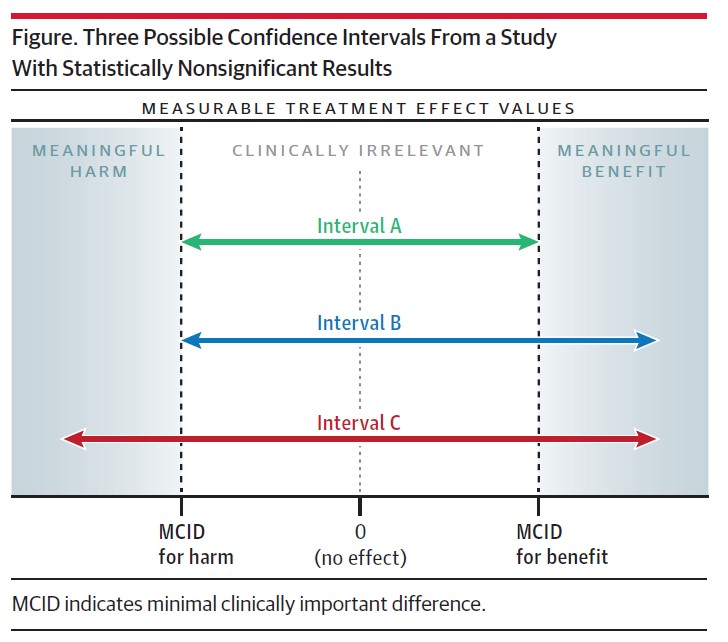

General Overview
Definitions of key terms commonly used in biomedical research
Types of Measurement
Binary: Two-level variables, e.g., yes/no, present/absent, gender
Nominal: Non-ordered categorical variables, e.g., race, profession
Ordinal: Ordered categorical variables, e.g., pain severity, radiographical osteoarthritis (OA) severity ratings (no/mild/moderate/severe OA)
Count: Discrete variable with integer values, e.g., Length of Stay, number of falls
Continuous: Numerical variable which takes a whole range of values, e.g., age, height, BMI
Mean & SD
Mean: Arithmetic average
SD: Measure of spread
Mathematically, \(\surd\) of averaged squared difference of an observation from the mean
Can be used to estimate the dispersion of a normally distributed population
An estimate of the variability of the population from which the sample was drawn (Altman and Bland 2005)
About 95% of observations of any distribution usually fall within the 2 standard deviation limits
Asymmetric data: SD\(\times\) 2 > Mean
SE: Standard error is the SD of the sampling distribution of a statistic.
- SE is used to infer about the range of plausible values for the true (population) statistic.
Median & IQR
Median: Middle sorted value
- Value such that around \(\frac{1}{2}\) of the values are below it and above it
May not divide sample into \(\frac{1}{2}\) for “clumped” data
Mean is better than the median when the distribution (i) contains heavy ties, (ii) is limited or well-behaved
IQR: Measure of spread
Defined by Quartile\(_{1}\) (\(Q_1\)) and Quartile\(_{3}\) (\(Q_3\))
Interval containing the middle \(\frac{1}{2}\) of the sample
P-value
P-value = Probability value
Assuming that H\(_{0}\) were true, what is the probability of obtaining a result (statistic) as or more extreme than our observed result?
If the probability is low (often set at P<0.05), we have sufficient evidence to reject H\(_{0}\) and accept H\(_{1}\)
If the probability is low, we fail to reject H\(_{0}\) but we do not speak of accepting H\(_{0}\). The P-value provides evidence against a null hypothesis, never evidence for something.
The P-value is influenced by sample size and effect size. Classical statistical testing does not consider clinical significance: Clinical relevance cannot be concluded from small P-values.
Confidence Interval
- Range of values within which that the “true” (population) summary statistic (e.g., mean, correlation coefficient, or difference score) would plausibly lie.
To interpret a 95% confidence interval,
The wrong way: There is a 95% chance that the unknown true value lies within the interval
The rough way: We are 95% confident that the unknown true value lies within the interval
The exact way: If we were to repeat experiment many times and to compute, in each experiment, a confidence interval for the summary statistic, 95% of these CIs would contain the true (population) value. Or, this confidence interval is computed by an algorithm that has a 95% probability of including the true value in repeated sampling.
Interpreting P-values and 95%CI.
In general, the only way that a large P -value can be interpreted is for example “The study did not provide sufficient evidence for an effect.” One cannot say “Because P = 0.70, we conclude the drug has no effect”. Only when the corresponding confidence interval excludes both clinically significant benefit and harm can one make such a conclusion. A large P-value by itself merely means that a higher sample size is required to allow conclusions to be drawn
P-value, Point Estimate, 95% CI
The P-value
This quantifies the evidence for a non-zero between-group difference. A large P-value, by itself, only suggests that we have insufficient evidence for a between-group difference.
The observed mean difference
Appraise this estimate against the MCID value.
What we do know: An individual-level MCID is almost always greater than a group-level MCID
What we do not know: how much greater is greater?
The 95% CI
(Very) Loosely speaking, this represents the range of plausible values for the true between-group differences.
Wide CI: there is great uncertainty about the true between-group differences
Narrow CI: there is little uncertainty about the true between-group differences. When there is little uncertainty, the finding is almost always clinically relevant.
Example
Findings
We observed a between-group difference of 6 points on the ODI, with a corresponding P-value of 0.01 and a 95%CI of 1 to 12 points
Appraisal
The P-value: We have evidence of a non-zero between-group difference
The Point estimate: If we are willing to assume a group-level MCID of 6 points, the observed between-group difference is probably clinically meaningful
The 95% CI: The wide 95%CI includes clinically trivial values; hence, there is uncertainty about the true between-group difference
Inference
Whilst we have evidence that two groups are different on the ODI and the observed between-group difference appeared to be clinically meaningful, there is still uncertainty about the true between-group differences.
| Findings | Interpretation |
|---|---|
| P<0.05 | Evidence of a (non-zero) treatment difference/effect |
| P>0.05 | Insufficient/No evidence of association (≠ evidence of no treatment difference)1 |
| (1) P<0.05; 95% CIs exclude trivial effects | Evidence of a clinically meaningful treatment difference |
| (2) P<0.05; 95% CIs exclude meaningful effects | Evidence of a treatment diff; however, this difference is not clinically meaningful |
| (3) P<0.05; 95% CIs include trivial + meaningful effects | Cannot exclude non-clinically meaningful treatment difference |
| (4) P>0.05; 95% CIs exclude meaningful effects | (Possibly) Evidence of no treatment difference |
| (5) P>0.05; 95% CI limits include meaningful effects | CI indicates a wide range of plausible true treatment differences (inconclusive finding as all scenarios are possible) |
| (6) P>0.05; 95% CI limits include trivial + meaningful effects | No evidence of treatment difference, however, we cannot exclude clinically important difference |
1 Beware of making the “Absence of Evidence is NOT Evidence of Absence” fallacy
Hawkins and Samuels JAMA article describes how to use 95%CIs to appraise non-significant results

Interestingly, the authors wrote:
Although CIs can be used to enhance the interpretation of a study, they have a number of limitations. For example, a 95%CI does not have a 95% probability of containing the true value of interest (eg, the true treatment effect), even though it is commonly described that way. Creating an interval that does have a specified probability of containing the true value requires a Bayesian analysis
Bayesian Statistics
A branch of statistics that (i) uses Bayes Theorem and (ii) doesn’t use P-values and generally does not test hypotheses.
Bayesian Statistics requires one to formally specify a probability distribution encapsulating the prior knowledge about, say, a treatment effect.
- The state of prior knowledge can be specified as \(no\) knowledge” by using a flat distribution, although this can lead to wild and nonsensical estimates.
- Once the prior distribution is specified, the data are used to modify the prior state of knowledge to obtain the post-experiment state of knowledge.
- Final probabilities computed in the Bayesian framework are probabilities of various treatment effects.
Comparing the 2 schools of thought
| Bayesian | Frequentist |
|---|---|
| Bayesian statistics aims to uncover the unknown treatment effect by providing evidence for all its possible values | Frequentist statistics aims to uncover the unknown treatment effect by providing evidence that it is not the null value |
| In Bayesian statistics, one specifies the prior distribution for the unknown treatment effect and uses a data generation process to estimate the conditional data likelihood. For a given (single) data-set, Bayesian statistics provides probabilities for all possible values of the treatment effect | In Frequentist statistics, one specifies a null hypothesis/value about the unknown treatment effect and uses a data generation process to make infinite replications of the data. For a given null hypothesis, Frequentist statistics provides probabilities of getting studies/datasets with more extreme results than the ones that we observe. In other words, conditional on there being no treatment efficacy and no harm, the P-value is the proportion of studies with results more extreme than the ones we have |
Prof Frank Harrell has provided a more detailed side-by-side comparison
Bayes Theorem
In my opinion, 3Blue1Brown explains this the best
Consideration
Bayesian methods provide direct, simply-stated probabilities of various treatment effects.
The price of being able to compute probabilities of various treatment effects is the necessity of specifying a prior distribution to anchor the calculations.
-
Tutorials for healthcare professionals
- Baldwin and Larson 2017
- Heino et al 2018
- Frank Harrell’s incredibly useful hbiostat pages